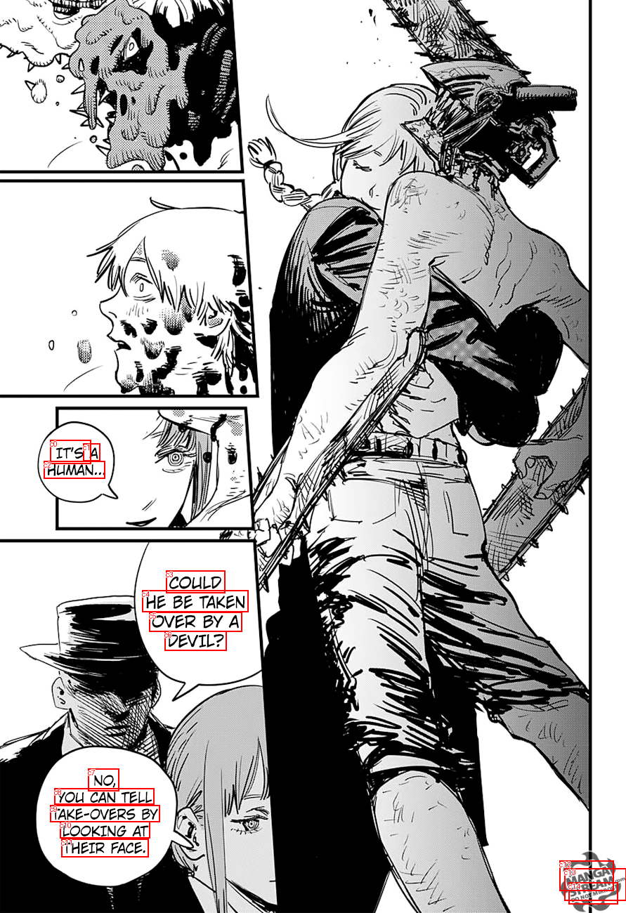
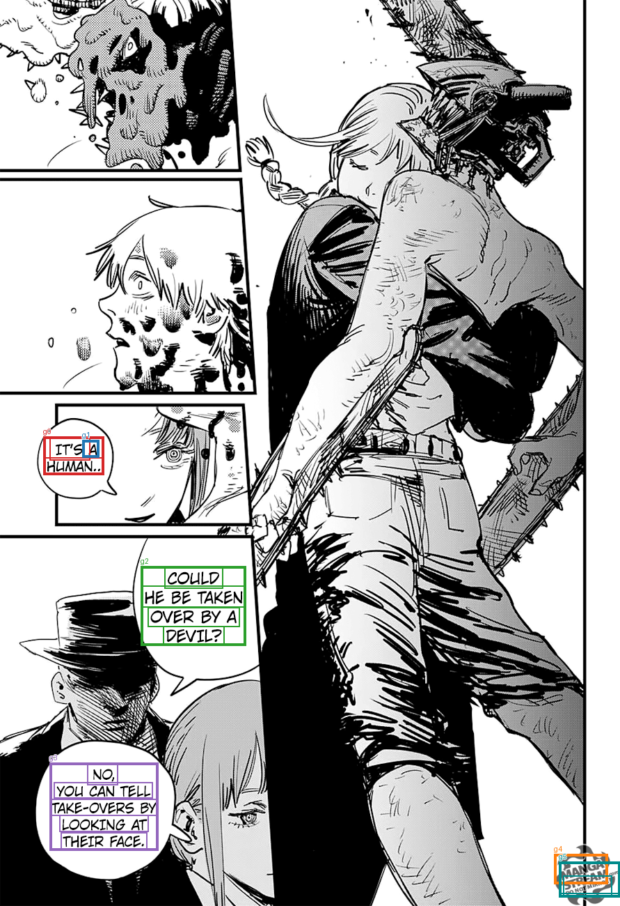

Saved TextExtractionPipeline groups, already filtered and joined. No OCR, filtering, or joining is run by diagnostics. References are comparison only; order is spatial.
Transcript TXT · All candidates and results JSON
IT'S HUMAN... A COULD HE BE TAKEN OVER BY A DEVIL? NO, YOU CAN TELL TAKE-OVERS BY LOOKING AT THEIR FACE. MANGA STREAM.com DO NOTMIRROR


| Group | OCR IDs | Joined text | Target index | Reference text | Similarity |
|---|---|---|---|---|---|
| g0 | c0, c2 | IT'S HUMAN... | 0 | IT'S A HUMAN... | 0.941 |
| g1 | c1 | A | |||
| g2 | c3, c4, c5, c6 | COULD HE BE TAKEN OVER BY A DEVIL? | 1 | COULD HE BE TAKEN OVER BY A DEVIL? | 1.0 |
| g3 | c7, c8, c9, c10, c11 | NO, YOU CAN TELL TAKE-OVERS BY LOOKING AT THEIR FACE. | 2 | NO. YOU CAN TELL TAKE-OVERS BY LOOKING AT THEIR FACE. | 1.0 |
| g4 | c12 | MANGA | |||
| g5 | c13, c14 | STREAM.com DO NOTMIRROR |
[]
[]
[]
[
{
"id": "c0",
"text": "IT'S",
"score": 0.9997605681419373,
"box": [
71.0,
626.0,
129.0,
660.0
]
},
{
"id": "c1",
"text": "A",
"score": 0.9996927976608276,
"box": [
118.0,
631.0,
142.0,
656.0
]
},
{
"id": "c2",
"text": "HUMAN...",
"score": 0.9696143269538879,
"box": [
62.0,
656.0,
149.0,
681.0
]
},
{
"id": "c3",
"text": "COULD",
"score": 0.9934548139572144,
"box": [
236.0,
812.0,
320.0,
844.0
]
},
{
"id": "c4",
"text": "HE BE TAKEN",
"score": 0.9674491286277771,
"box": [
202.0,
840.0,
353.0,
871.0
]
},
{
"id": "c5",
"text": "OVER BY A",
"score": 0.9995802640914917,
"box": [
212.0,
871.0,
344.0,
899.0
]
},
{
"id": "c6",
"text": "DEVIL?",
"score": 0.999866247177124,
"box": [
234.0,
898.0,
322.0,
926.0
]
},
{
"id": "c7",
"text": "NO,",
"score": 0.9982075691223145,
"box": [
125.0,
1094.0,
169.0,
1126.0
]
},
{
"id": "c8",
"text": "YOU CAN TELL",
"score": 0.9973576664924622,
"box": [
77.0,
1122.0,
219.0,
1145.0
]
},
{
"id": "c9",
"text": "TAKE-OVERS BY",
"score": 0.9997991323471069,
"box": [
71.0,
1146.0,
227.0,
1170.0
]
},
{
"id": "c10",
"text": "LOOKING AT",
"score": 0.9545515775680542,
"box": [
85.0,
1169.0,
213.0,
1193.0
]
},
{
"id": "c11",
"text": "THEIR FACE.",
"score": 0.9999485015869141,
"box": [
87.0,
1194.0,
211.0,
1220.0
]
},
{
"id": "c12",
"text": "MANGA",
"score": 0.999663233757019,
"box": [
796.0,
1225.0,
873.0,
1268.0
]
},
{
"id": "c13",
"text": "STREAM.com",
"score": 0.9279740452766418,
"box": [
803.0,
1236.0,
891.0,
1282.0
]
},
{
"id": "c14",
"text": "DO NOTMIRROR",
"score": 0.9921031594276428,
"box": [
809.0,
1256.0,
879.0,
1287.0
]
}
]